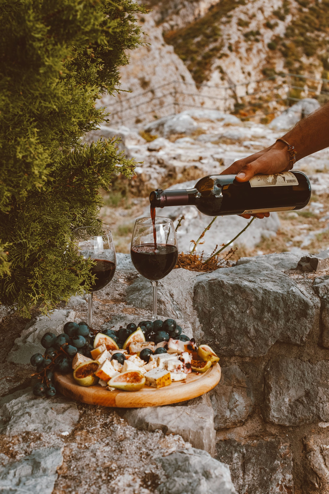
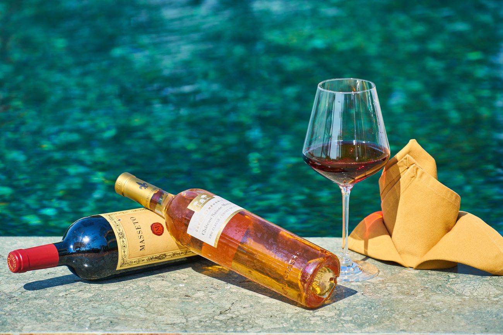
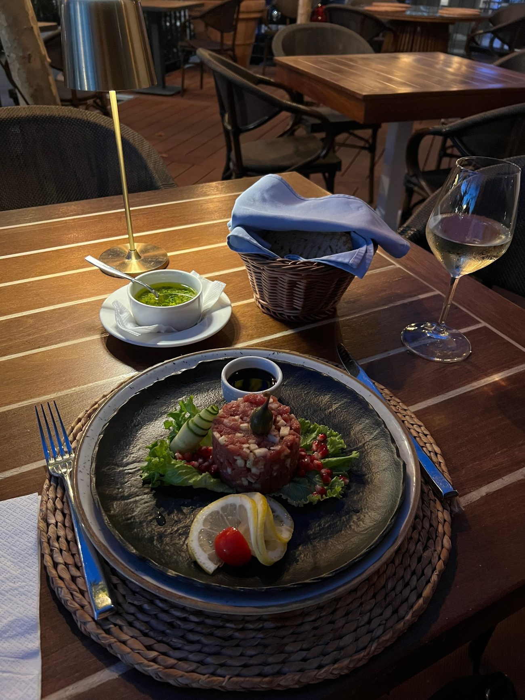
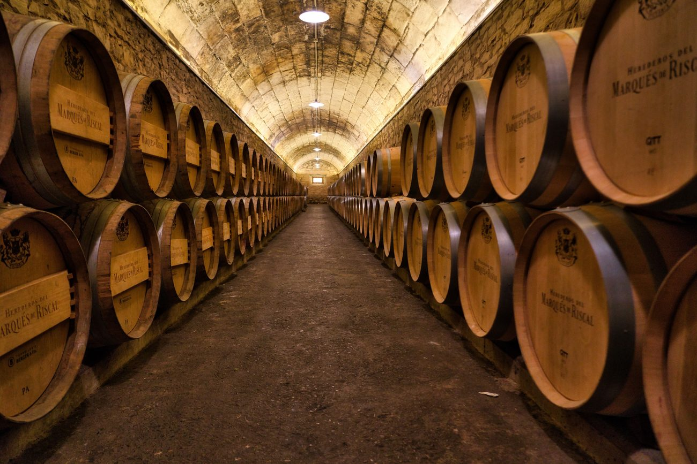

Wine is meant to be experienced. Il vino è fatto per essere vissuto.
From intimate tastings to curated pairings and private occasions, the setting, the wines, the cuisine and the conversation become part of the same story. Dalle degustazioni intime agli abbinamenti curati fino alle occasioni private, l'ambientazione, i vini, la cucina e la conversazione diventano parte della stessa storia.

A closer encounter.Un incontro ravvicinato.
Intimate sessions built around remarkable wines and the stories they carry — from Etna's volcanic terroir to the great regions beyond it. Sessioni intime costruite intorno a vini straordinari e alle storie che portano con sé — dal terroir vulcanico dell'Etna alle grandi regioni oltre l'isola.

The dialogue between wine and cuisine.Il dialogo tra vino e cucina.
Considered pairings that respond to ingredient, season and atmosphere — designed to let each course and each glass sharpen the other. Abbinamenti pensati in base a ingrediente, stagione e atmosfera — costruiti perché ogni portata e ogni calice esaltino l'altro.

Curated moments, shared with others.Momenti curati, condivisi con altri.
Guided sessions for hotel guests, private groups and teams — an introduction to Sicilian wine culture, or a deeper exploration for the already curious. Sessioni guidate per ospiti dell'hotel, gruppi privati e team — un'introduzione alla cultura enologica siciliana, o un approfondimento per i più curiosi.